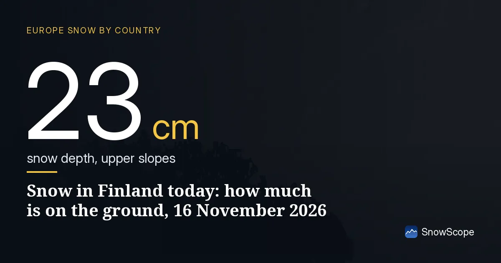

Finland's snow storage swelled 138,530 km² in one week
Finland's mountains have accumulated snow across 157,360 square kilometres as the season turned in a single week: a gain of 138,530 km² that marks the opening of winter water storage. This rapid transition from bare ground to half-covered terrain shows how quickly moist Atlantic air masses can deliver precipitation when temperatures align with altitude.
See the live snow forecast for Kallin in the SnowScope appSnow depth, powder alerts and the 3D map, free.
The Rapid Transition
This week saw one of the most dramatic shifts in Finnish mountain snow cover of the early season: a jump from 18,830 km² last Monday to 157,360 km² today—a gain of 138,530 km² in seven days. For water resource managers, the speed matters as much as the total. When snow accumulates this rapidly across diverse elevations, its density and stability vary significantly because the snow lacks time to settle and bond with underlying layers.
Early-season snow is often thin and patchy. At lower elevations below 500 metres, coverage remains incomplete—only 52 per cent of the terrain holds snow—and rocks and vegetation still protrude through it. Where snow persists, it represents a reservoir of fresh water that will gradually release into soil and streams as temperatures warm and the pack settles through winter.
| Resort | Snow depth | New snow, 72 h | Coming, next days | Top |
|---|---|---|---|---|
| Kallin | 23 cm | 6 cm | 13 cm | 65 m |
| Salla | 21 cm | 16 cm | 10 cm | 462 m |
| Rukatunturi | 19 cm | 15 cm | 10 cm | 494 m |
| Kiririnteet | 18 cm | 14 cm | 11 cm | 385 m |
| Pyhä | 18 cm | 12 cm | 13 cm | 375 m |

From Bare Ground to Winter
The progression tells a story of expanding winter water storage. Seven days ago, only 18,830 km² held snow; yesterday, 177,290 km² had accumulated; today, 157,360 km² remains covered after some overnight melt in marginal zones.
Kallin, the highest of the five measured resorts, leads with 23 cm—substantially above its normal 4 cm for November—suggesting that the first snow will persist at elevation through coming fluctuations. The Ruka fells, further north, captured the most intense snowfall over the past 72 hours, recording 16 cm at a single station point. This measurement reflects how local exposure, wind direction, and aspect shape what accumulates in complex terrain.

Snow at Higher Elevations
The vertical gradient across Finland reveals where water has been stored most effectively. Between 500 and 1,000 metres elevation, 97 per cent of the terrain now carries a mean depth of 12 cm—a nearly continuous cover despite recent atmospheric fluctuations. Above 1,000 metres, the picture improves markedly: full coverage at a mean depth of 38 cm, enough to remain stable through early-season temperature swings.
Below 500 metres, only 52 per cent coverage at a mean of 4 cm means that in many lower valleys and exposed slopes, the snow will remain vulnerable to melting if any warming occurs in coming days. The snow line currently sits at 200 metres, marking the threshold below which precipitation fell as rain rather than snow during recent storms.
New Snow and Distribution
The past 72 hours brought a maximum of 11 cm of new snow to any measured location, with 24 of Finland's 67 mapped resorts now recording some snow cover. The northern concentration around the Ruka fells—including Rukatunturi at 19 cm depth with 15 cm new and Kiririnteet at 18 cm depth with 14 cm new—benefited from steering patterns that pushed moist air northward.
In the same window, Kallin accumulated only 6 cm of new snow but retains the deepest pack. This disparity highlights early-season complexity: the same weather system delivers very different quantities depending on topography and local convergence.
Early Season Leaders
Kallin stands at 23 cm, nearly three times its normal 4 cm depth for November, holding clear advantage across the region. Salla follows at 21 cm, above its usual 16 cm for November, while Rukatunturi and Kiririnteet cluster near 18–19 cm. All five major resorts tracked here exceed their normal November snow depth, with Kallin standing at 325 per cent of average.
These depths represent a solid foundation for the season's opening, though they remain modest compared to what accumulates as winter deepens. The measurement uncertainty at this stage is substantial: thin early-season snow redistributes rapidly with wind, and a single depth reading captures only one location's story, not the conditions on nearby slopes of different aspect or exposure.
What Comes Next
The coming three days will see occasional snow, with up to 11 cm possible through 19 November as a low-pressure system moves across the region. After that, the pattern shifts: late November (24–30 November) shows only 3 cm of new snow expected, suggesting a drier period may emerge.
Forecast uncertainty increases beyond seven days. For water managers assessing mountain storage and spring runoff, the critical question now is whether this November snow survives until December's heavier accumulation begins, or whether a warm spell triggers significant melt. Terrain above 1,000 metres is likely to retain its cover, but lower valleys and exposed slopes may see substantial fluctuation.
Tips for skiers
- Head to higher elevations where snow is reliable: above 1,000 metres holds 38 cm at full coverage, while below 500 metres only 52 per cent of terrain is covered and depth is patchy at 4 cm.
- Tomorrow (18 November) is forecast as the snowiest day in the coming week—plan to be on the mountains if conditions allow.
- Watch for buried rock and sparse snow in lower valleys; early-season coverage remains thin and discontinuous below 500 metres.
- Single depth measurements reflect only one spot; actual conditions vary significantly across nearby slopes of different aspect and wind exposure.
- Check the official avalanche forecast before skiing off-piste, especially on steep terrain where early-season snow bonding is uncertain.
About these numbers
Resort snow depths are the deepest snow on the resort's upper slopes on the date shown; they are estimates for an area, not a measurement at one point. Forecasts can change. Always read the official avalanche bulletin before going off-piste.
Cite this report
For research, teaching or the press: the numbers and charts are free to reuse under CC BY 4.0 with this citation.
SnowScope (2026), Finland's snow storage swelled 138,530 km² in one week, https://snowscope.app/blog/en/2026/11/finland-snow-report-16-november-2026.html, accessed 2026-11-16
SnowScope (Atlas Labs). (2026, November 16). Finland's snow storage swelled 138,530 km² in one week. SnowScope snow reports. https://snowscope.app/blog/en/2026/11/finland-snow-report-16-november-2026.html
BibTeX
@misc{snowscope2026finlandsnowreport16novem,
author = {{SnowScope (Atlas Labs)}},
title = {Finland's snow storage swelled 138,530 km² in one week},
year = {2026},
month = nov,
howpublished = {\url{https://snowscope.app/blog/en/2026/11/finland-snow-report-16-november-2026.html}},
note = {Published 2026-11-16 20:42 UTC; accessed 2026-11-16}
}· CC BY 4.0 · Methods, data and tools →
Kallin: snow and temperature by height, this winter vs last (tools) →
Follow Kallin
Free: a message when fresh snow is coming, and the forecast every morning.
More snow reports

SnowScope's peak finder is a free peak finder app: point your phone at the mountains and it names the summits, with height, distance and climb time. Our tests: 98 % of the summits it lists are really in sight, and on real photos it corrected compass errors of up to 105° to 0.15°. Free with 3 names, every peak for $0.99 once.

Orelle reached 31 cm by 16 November, up 17 cm in one week. The Alps are forecast to get up to 103 cm more snow by 19 November.

A slope map of Les Grands Montets and seven other ski areas shows how much of the ground is steeper than 30°, 35° and 40°, and why that line matters for avalanches.